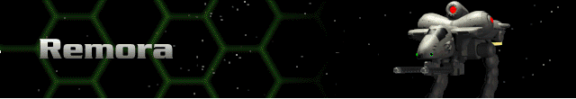
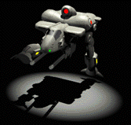

› |
› |
› |
› |
Remora |

|
Chassis: Remora The Remora was initially designed as an escort vehicle for the heavier Hercs. Since the Remora’s deployment at the beginning of the third Cybrid War, it has proven especially useful as a fast assault Herc. Some Herc Commanders have successfully equipped the Remora with mining pods to capitalize on its speed for mining in hazardous conditions. Standard equipment: Standard Sensor 7.22 Amplitude, a Fission 100 reactor, Bertrand-Altase targeting computer, Shield 300 shield class, Chemical 108 battery, Standard Life Support, 5cm armor, Pre-Flexive drive system, a jump capability of three, and secondary movement yield. Available at Tech Level 0. |
 |
Max. Weapons Capabilities
These are all of the weapons which can be mounted to this Herc once you have reached all Technology levels through promotions.
| Energy | Missile | Cannon | Plasma | ELF | Adv. Tech. |
|---|---|---|---|---|---|
| SE400 Laser Cannon | SP Missiles | 20mm Autocannon | Fusion Flamer | Lt. ELF | Neutron Gun |
| SC400 Comp. Laser | HOG Missiles | 50mm Autocannon | Plasma Mortar | Auto ELF | Thermal Lance |
| SP500 Lt. Pulse Laser | MicroMissiles | 30mm Chain Gun | Fusion Mortar | Chain ELF | EMP Blaster |
| 90mm Accel. Cannon | Lt. Particle Gun | ||||
| 100mm Accel. Chain Gun | Thermal Needler | ||||
| Devastator | EMP |